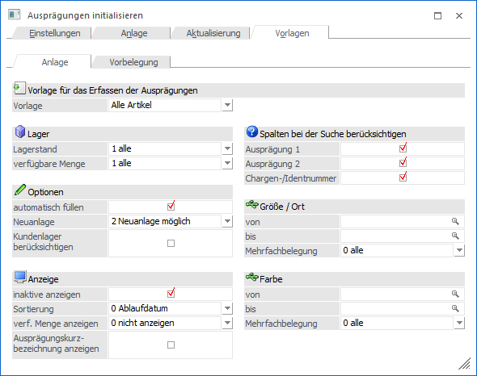
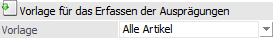
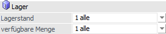
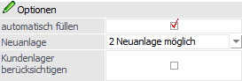
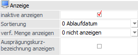
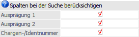
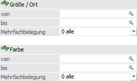
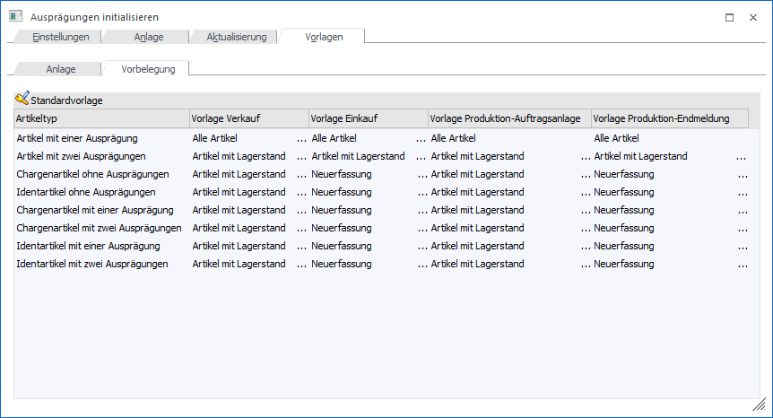

In dem Register "Vorlagen" können Vorlagen (d.h. Grundeinstellungen) für das Arbeiten im Fenster "Ausprägungen erfassen" definiert werden. Des Weiteren kann hinterlegt werden, welche Vorlage wann genutzt werden soll.
Unterregister "Anlage"
In dem Unterregister "Anlage" können unterschiedliche Vorlagen erstellt bzw. editiert werden.

Vorlage für das Erfassen der Ausprägungen

Ø Vorlage
Aus der Auswahlliste kann entweder eine bestehende Vorlage ausgewählt oder durch Eingabe einer neuen Bezeichnung eine neue Vorlage angelegt werden. Die bestehenden Vorlagen sind:
ü Alle Artikel
Die Optionen
werden so voreingestellt, dass alle vorhandenen Artikel angezeigt werden.
ü Neuerfassung
Die Optionen
werden so voreingestellt, dass keine vorhandenen Artikel angezeigt werden und
nur Artikel neu angelegt werden können.
ü Suchen
Die Optionen werden so
voreingestellt, dass keine vorhandenen Artikel angezeigt werden und Artikel nur
neu angelegt oder gesucht werden können.
ü Artikel mit Lagerstand
Die
Optionen werden so voreingestellt, dass nur Artikel mit Lagerstand angezeigt
werden.
ü Artikel ohne Lagerstand
Die
Optionen werden so voreingestellt, dass nur Artikel ohne Lagerstand angezeigt
werden.
Hinweis
Die bestehenden Vorlagen können bei Bedarf auch geändert werden.
Lager

Ø Lagerstand
Mit Hilfe der Auswahlliste kann definiert werden, welche Ausprägungen, abhängig vom Lagerstand, angezeigt werden sollen.
ü 0 - nur > 0
Es werden nur
Zeilen mit einem Lagerstand größer Null angezeigt.
ü 1 - alle
Es werden alle Zeilen
angezeigt.
ü 2 - nur = 0
Es werden nur
Zeilen angezeigt, bei denen der Lagerstand Null ist.
ü 3 - nur <> 0
Es werden
nur Zeilen angezeigt, bei denen der Lagerstand größer oder kleiner Null ist.
Ø verfügbare Menge
An dieser Stelle kann definiert werden, welche Ausprägungen, abhängig von der verfügbaren Menge, angezeigt werden sollen.
ü 0 - nur > 0
Es werden nur
Zeilen mit einer verfügbaren Menge größer Null angezeigt.
ü 1 - alle
Es werden alle Zeilen
angezeigt.
ü 2 - nur = 0
Es werden nur
Zeilen angezeigt, bei denen die verfügbare Menge Null ist.
ü 3 - nur <> 0
Es werden
nur Zeilen angezeigt, bei denen die verfügbare Menge größer oder kleiner Null
ist.
Optionen

Ø automatisch füllen
Bei Aktivierung dieser Option werden nach dem Öffnen des Fensters "Ausprägungen erfassen" sofort alle Ausprägungsartikel angezeigt, welche der Selektion entsprechen.
Ø Neuanlage
Mit dieser Option kann festgelegt werden, ob Artikel neu angelegt werden dürfen. Folgende Möglichkeiten stehen zur Verfügung:
ü 0 - nur Neuanlage
Damit kann
nur eine Neuanlage von Ausprägungen erfolgen, es können keine bestehenden
Ausprägungen ausgewählt werden.
ü 1 - keine Neuanlage
Es darf
keine Neuanlage erfolgen, es dürfen nur bestehende Ausprägungen verwendet
werden.
ü 2 - Neuanlage möglich
Es können
sowohl Neuanlagen durchgeführt werden, als auch bestehende Ausprägungen
verwendet werden.
Ø Kundenlager berücksichtigen
Durch die Aktivierung dieser Option werden Ausprägungen mit einer Hinterlegung im Feld "Fremdlager / Konto" (WinLine FAKT - Stammdaten - Ausprägungen - Ausprägungen verwalten) nur dann berücksichtigt / angezeigt, wenn das dort hinterlegte Konto dem aktuellen Konto entspricht.
Achtung
Hierfür muss das Fenster "Ausprägungen erfassen" aus einem Menüpunkt aufgerufen verwendet, bei dem eine Kontonummer angegeben werden muss, z.B. Belegerfassung, Telesales, Kundenbestellungen bearbeiten oder Lieferantenlieferungen aufteilen.
Anzeige

Ø inaktive anzeigen
Mit dieser Option kann gesteuert werden, ob inaktive Ausprägungen im Fenster "Ausprägungen erfassen" angezeigt werden sollen oder nicht.
Hinweis
Eine Mengeneingabe ist bei diesen Ausprägungen nicht möglich.
Ø Sortierung
Es kann eingestellt werden, ob nach dem "0 - Ablaufdatum" oder dem "1 - Eingangsdatum" sortiert werden soll. Diese Einstellung ist allerdings nur für LIFO- oder FIFO-Artikel von Relevanz.
Hinweis
Bei LIFO-Artikeln wird automatisch "absteigend" und bei FIFO-Artikel "aufsteigend" sortiert.
Ø verf. Menge anzeigen
An dieser Stelle kann definiert werden, ob und wie die aktuell verfügbare Menge im Fenster "Ausprägungen erfassen" dargestellt werden soll:
ü 0 - nicht anzeigen
Die
verfügbare Menge wird nicht angezeigt.
ü 1 - anzeigen
Durch die
Aktivierung dieser Option wird im Fenster "Ausprägungen erfassen" eine Spalte
mit der errechneten verfügbaren Menge angezeigt.
ü 2 - inkl. Beleginfo
anzeigen
Zusätzlich zur verfügbaren Mengen (siehe auch Auswahl "1 -
anzeigen") wird die Spalte "Beleginfo" dargestellt. In dieser erfolgt die
Ausweisung jenes Auftrags (Verkauf oder Produktion), welcher die
Bestandsveränderung auslösen wird.
Hinweis
Sollten mehrere Aufträge für die zukünftige Bestandsveränderung verantwortlich sein, so wird anstatt einer Auftragsnummer der Hinweis <Aufträge> dargestellt. Durch Anwahl dieser Info wird die Artikelbedarfsvorschau geöffnet.
Ø Ausprägungskurzbezeichnung anzeigen
Wenn diese Option aktiviert ist, dann wird im Ausprägungsfenster auch die Kurzbezeichnung der Ausprägungen (die Kennzahl) angezeigt.
Spalten bei der Suche berücksichtigen

Ø Spalten bei der Suche berücksichtigen
An dieser Stelle kann gewählt werden, welche Felder bei der Suche im "Ausprägungen erfassen" berücksichtigt werden sollen. Zur Auswahl stehen dabei:
ü Ausprägung 1
ü Ausprägung 2
ü Chargen-/Identnummer
Hinweis
Diese Einstellung kann im "Ausprägungen erfassen" über die rechte Maustaste geändert werden (gilt nur solange das Fenster geöffnet ist).
Selektion Ausprägung 1 / Ausprägung 2

Ø Selektion Ausprägung 1 / Ausprägung 2 (hier "Größe / Ort" und "Farbe")
In diesem Bereich kann eine Vorauswahl der anzuzeigenden Ausprägungen getroffen werden. Zusätzlich kann entschieden werden, welche Ausprägungen bei Verwendung von Mehrfachbelegungen angezeigt werden sollen:
ü 0 - alle
ü 1 - nur belegte Ausprägungen
ü 2 - nur nicht belegte Ausprägungen
Unterregister "Vorbelegung"
In dem Unterregister "Vorbelegung" kann hinterlegt werden, bei welchem Artikeltyp welche Vorlage für die Bearbeitung herangezogen werden sollen.

Ø Vorlage Verkauf
An dieser Stelle kann die Vorlage für den Verkaufsbereich definiert werden. Hierzu zählen folgende Punkte:
ü Belegerfassung Verkauf
ü Lagerbuchungsschlüssel V+, P+, L- in der Lagerbuchhaltung
ü Inventur
ü Kundenbestellungen bearbeiten
Ø Vorlage Einkauf
An dieser Stelle kann die Vorlage für den Einkaufsbereich definiert werden. Hierzu zählen folgende Punkte:
ü Belegerfassung Einkauf
ü Lagerbuchungsschlüssel V-, P-, L+ in der Lagerbuchhaltung
ü Lieferantenlieferungen aufteilen
Ø Vorlage Produktion-Auftragsanlage
An dieser Stelle kann die Vorlage für einen Teil des Produktions- und Stücklistenbereichs definiert werden. Hierzu zählen folgende Punkte:
ü Belegerfassung - Handelsstücklistenfenster
ü Produktionsvorbereitung
ü Produktionskorrektur
Ø Vorlage Produktions-Endmeldung
An dieser Stelle kann die Vorlage für einen Teil des Produktionsbereichs definiert werden. Hierzu zählt folgender Punkt:
ü Produktionsendmeldung